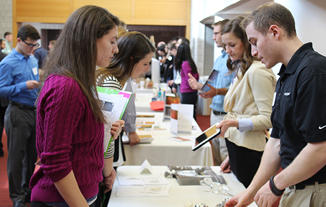

Pathways program advisor and Lehigh University Professor John Ochs ponders whether our engineering students are truly learning anything. Is integrating entrepreneurship the answer?

by Professor John B Ochs, Professor of Mechanical Engineering, Lehigh University
May 6, 2015
As an engineering educator, have you ever asked yourself this fundamental question, “Is what I am doing in the classroom making a difference?” Or, put another way, for all the effort put into lectures or flipped classrooms, grading of quizzes, tests and reports, are my students actually learning anything?
After 37 years in this business with the last 20 directing our capstone design project courses, I can tell you one thing: whatever we are doing in lower level courses, our students are not prepared for capstone design projects.
When I consider the undergraduate curriculum in my own mechanical engineering department, we offer courses that develop the ability to understand, model and simulate mechanical engineering principles and apply them to real-world problems. We cover topics such as statics, dynamics, materials, thermodynamics, fluid dynamics, engineering graphics and manufacturing along with professional ethics. Students take our entrepreneurship minor in parallel with the principles courses. The goal is for our engineering students to learn the social context of their efforts and develop an awareness of the impact of their profession within a global, national and regional point of view. This approach fosters deeper learning and retention…or at least, it is supposed to.
At the capstone level in the junior/senior years, I ask all teams to create models of the physical systems they are trying to improve. For example, recently one of the 33 teams of six students in my capstone course developed a gravity fed watering system for a local community garden that was miles away from power and water. They specified, purchased and installed a solar powered pump for a newly dug well. They now had to develop a holding tank that would be elevated to a height and connected to piping that would distribute water to an acre of land. The team found a 500-gallon tank with an appropriate float-valve to trigger the pumps to maintain water levels in the tank.
Then came the engineering. I asked the team to design a support structure that would provide a safety factor of 2 and give the height needed to get water to the far end of the garden. I required them to model it. They looked at me with a deer-in-headlights expression.
I said, "You have the geometry of the tank, give me a free-body diagram of the forces and moments.” I might as well have been speaking French. They said they took statics, but that was four semesters ago. They didn’t have notes from that class, because they took it online. They had already sold their statics textbooks. “So” I asked, “How will you solve this problem using your engineering knowledge?” After they could not find the answer, we dove into two weeks of one-on-one learning of statics, energy balance and fluid flow.
If you know about Bloom’s taxonomy for describing student learning, you know about the six levels: 1-Knowledge through 6-Evaluation. Based on what I am seeing from most seniors in all majors, I suggest we add a new level below Knowledge, called Awareness (level 0). After six semesters of engineering education, I believe our students are achieving this level 0 – Awareness, which I define as the ability to recognize and research something previously encountered but vaguely recalled. Put another way, little of what they have experienced prior to their capstone courses has stuck!
A great number of resources are being used to educate our students. Are we succeeding? Does integrating the entrepreneurial mindset increase motivation as well as greater tolerance for and understanding of engineering principles? At the capstone level, I have a general sense that the entrepreneurial mindset does indeed do this, as it provides a context for the application of those principles. However, we need not wait until the capstone courses. We need to do more, and I believe that "more" is integrating entrepreneurship into our core engineering classes. Jonathan Weaver and his KEEN team at University of Detroit Mercy, and Mark Schar and Sheri Sheppard from Stanford University offer insights into how this can be done in the papers below.
http://nciia.org/sites/default/files/conf2010papers/weaver.pdf
http://onlinelibrary.wiley.com/doi/10.1002/j.2334-5837.2010.tb01157.x/abstract
http://weaverjm.faculty.udmercy.edu/udmkeencases.html
http://www.asee.org/public/conferences/20/papers/6565/view
About the author:
Professor John Ochs is founder and director of Lehigh's award-winning Integrated Product Development (IPD) program, and serves as director of the innovative professional master's program (M. Eng) in Technical Entrepreneurship. He is an associate of the University's Baker Institute for Entrepreneurship, Creativity and Innovation. Additionally, Professor Ochs serves as an advisor for Epicenter's Pathways to Innovation Program.